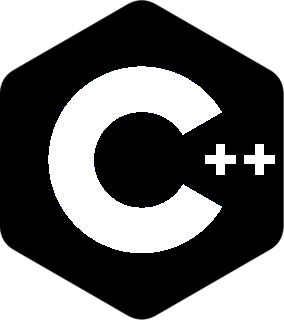
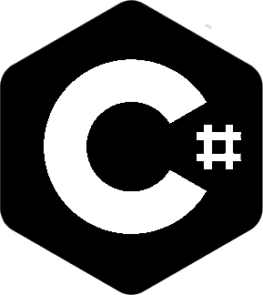

Skills



Hi! I'm Nehemiah Dias and I'm pusuing a career in computer science, specifically as a Full-Stack Developer. I've been interested and passively learning code since I was in the eighth grade starting with Python! I really started to actively learn code in sophomore year of high school with the intention of majoring in Computer Science in college (which I did). I branched out to HTML/CSS, JavaScript, More Python, C++, C#, and Java and on the path to learn React and SQL to be well versed enough to become a Full-Stack Developer.
As I said before, I majored in Computer Science in College with the plan to get my Backelor's Degree and eventually a Masters but one day I set up a meeting with my Professor and Counselor to see what the curriculum would be for my major. I looked very closely and thought to myself "Four years, for this?" I knew college wouldn't make me a good enough programmer to actually get a job! So what'd I do? Well, what any normal person would and drop out of my Private University and go to Community College for, you guessed it... Real Estate. The University I was at demotivated me so much by seeing how little skill they can provide, that coupled with being intimidated at other peoples' skill made me switch career paths. But then I realized I hated Real Estate and I'd only really be happy by being a programmer, so I enrolled in a Certificate Program where I knew I could actually learn practical skills at a fast enough pace because lets face it, writing a guess the number game for two weeks in college wasn't cutting it.
So hear I am becoming the great programmer that I know I can be! I am an analytical thinker, a problem solver, a very fast learner, I'm motivated, and, best of all, I have amazing social skills! Thanks for reading!